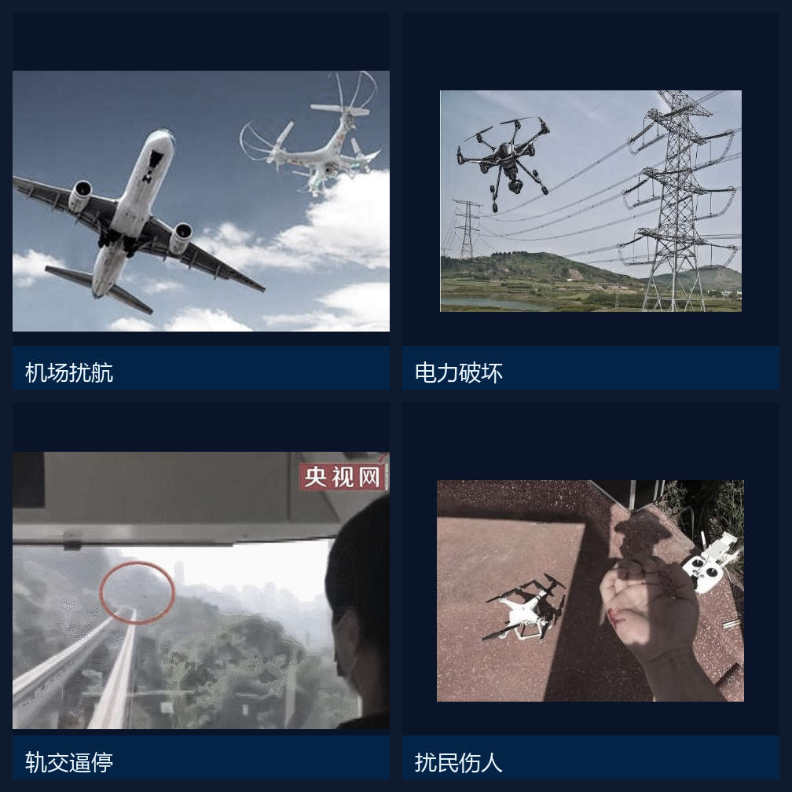
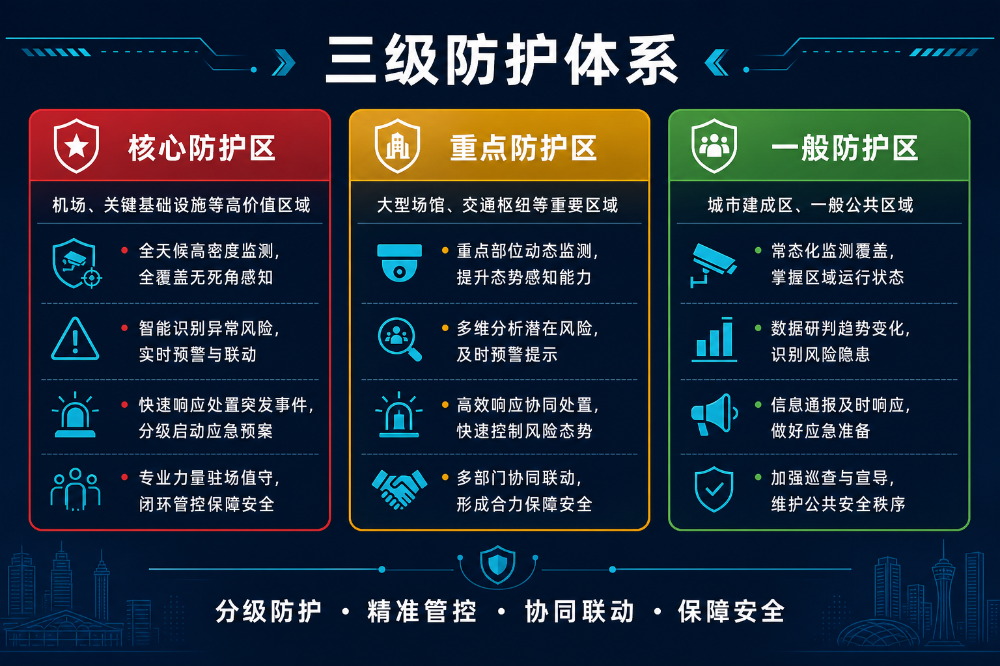
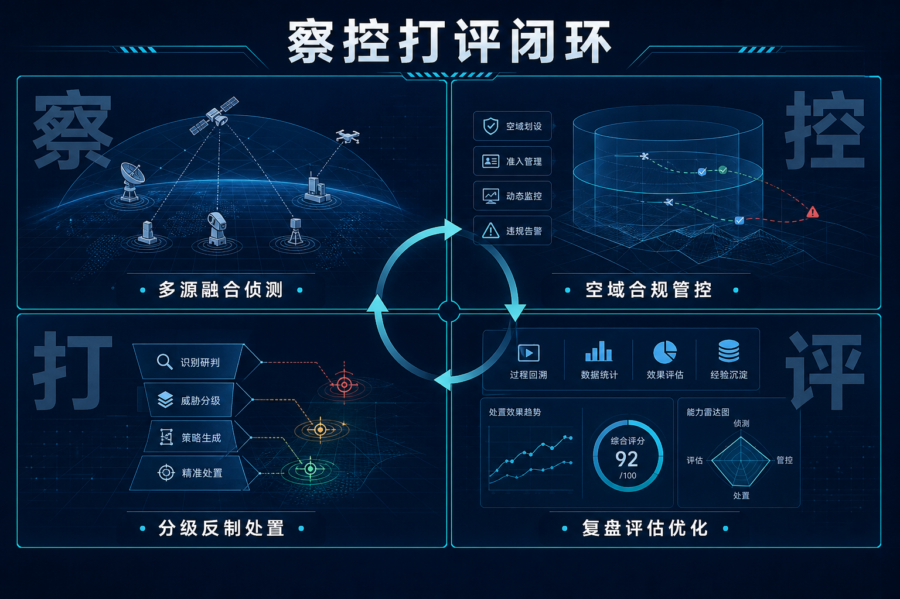

买几台反制枪就算低空防御了吗？远远不够。天罗工程从体系视角回答「城市级低空安全怎么建」：分级防护划区域，察控打评串流程，猎场一号平台做中枢。
不少单位对低空安全的第一反应是：买设备。装一台雷达、配几把反制枪，似乎就有了交代。
但真实的低空威胁不按设备清单出牌。机场、电力设施、大型活动现场、重点机关，全国范围内无人机安全事件已遍及各类关键领域，威胁正从偶发滋扰走向常态化。单点设备能守一个点，守不住一座城——雷达有盲区，反制枪要人扛，各设备数据不通，事发时谁指挥、谁处置、依据什么定级，往往说不清。
城市级低空安全，需要的是体系，不是设备的堆叠。

01 天罗工程是什么
天罗工程是羽嘉科技打造的警用低空防务智能实战解决方案，由中原低空安全联合研究院联合攻关孵化。它不是某一台设备，而是一整套覆盖「探测、识别、反制、评估」全流程的城市级建设方案。
一句话概括它的目标：让低空管理从「被动应对」转向「主动防控」。
02 分级防护：不是所有区域都要一样的投入
城市那么大，处处按最高标准布防既不现实也没必要。天罗工程按区域重要程度划分防护等级：
核心防护区——机场净空、重点机关、关键基础设施等，配置最完整的侦测反制能力，支持无人值守自动处置；重点防护区——大型场馆、交通枢纽、人员密集区域，重点监测预警，快速响应处置；一般防护区——城市面上区域，以合规登记与常态监测为主。
分级的好处是把钱花在刀刃上：核心区域密不透风，面上区域看得见、管得住，整体投入可控。

03 察控打评：把流程串起来
有了分区，还要有流程。天罗工程把低空防务拆成四个环节：
察——多源融合侦测，雷达、无线电、光电协同，看清天上有什么；控——空域管控与合规管理，实名登记、飞行报备，让合法飞行有序、违规飞行显形；打——分级反制处置，从电子干扰到出警核查，按威胁等级匹配手段；评——事后复盘评估，数据归档、效果分析，持续优化防线。
四个环节由猎场一号平台统一调度：设备是手脚，平台是大脑，民警和指挥员通过大屏与警用终端接入整个体系。

04 经过实战检验
这套体系不是纸面方案。天罗工程已在大型文化节、博览会、国际会议、高原演练等多类安保场景中完成实战交付，在复杂空域环境下经受了检验。
大型活动安保的特点是人流密集、空域敏感、容错率极低——恰恰是对低空防御体系最严苛的考场。

05 写在最后
低空经济与低空安全是一体两面。产业飞得越高，防线就要扎得越牢。对城市管理者来说，问题已经不是「要不要建」，而是「怎么建得科学、用得起来」。
天罗工程给出的答案是：分级防护定格局，察控打评通流程，平台中枢管全局。
—— 关于我们 ——
羽嘉科技，城市级低空安全解决方案提供商，
「猎场一号」警用低空防务智能实战平台研发者。
让低空管理从「被动应对」转向「主动防控」。
商务合作：15515738319 ｜ yujiadikongkeji@163.com
免责声明：本文为企业方案介绍，仅供行业交流参考，不构成任何决策依据。